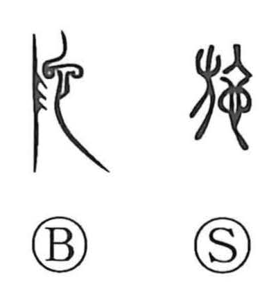

施

Uncategorized
Kun: hodokosu | On: shi, se
to carry out ・ to apply ・ to bestow ・ to implement
Explanation
Shirakawa sees 施 as a phono-semantic compound. The element 也 functions as the phonetic that signals the on reading shi, while the accompanying form depicts a banner streaming in the wind. From the image of letting the flag fly—issuing a signal that sets troops in motion—the character came to express commanding movement and, by extension, executing or putting things into effect. This background also underlies older senses like “to be transferred, to move,” and naturally supports the later Japanese sense hodokosu, “to carry out, to apply, to bestow.”